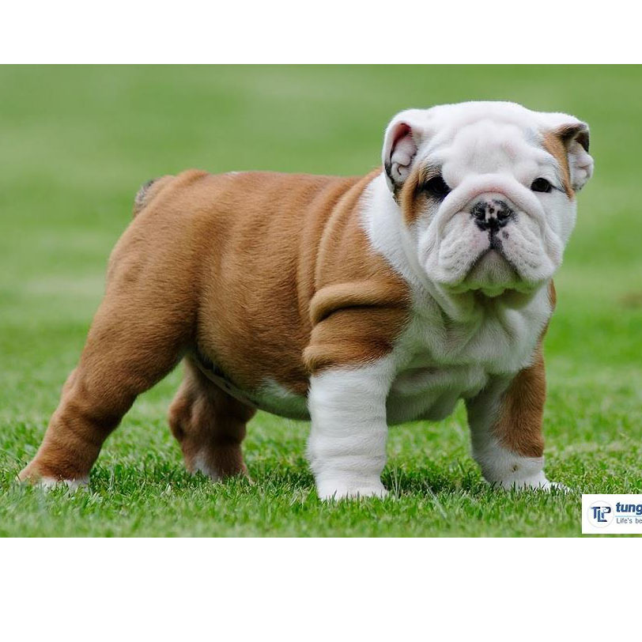

Điều tuyệt vời là những chú chó Bulldog rất thoải mái và thương yêu,bởi chúng có một khuôn măt nhăn nheo đáng yêu và có dáng đi như chân vòng kiềng thu hút nhiều sự chú ý. Chúng rất phù hợp với những gia đình mà muốn được thư giãn và một chú chó ngoan có thể bao dung với trẻ con và những vật nuôi khác.
Một số đặc điểm nổi bật của chó Bun là có một vẻ đẹp đặc trưng ấn tượng bởi vẻ bề ngoài oai vệ của chúng. Chó Bun có thân hình thấp nhưng to ngang chắc lẳn. Chúng cao từ 12 - 16 inches (31 – 40 cm). Cân nặng từ 53 - 55 pounds (24– 25 kg), chó cái 49 – 51 pounds (22 – 23 kg). Chúng có cái đầu tròn to khoẻ mạnh và rộng. Đầu của Bulldog cần phải rộng, càng rộng càng tốt, nó thể hiện đó là một con chó tốt. Hai má to đội lên dưới đôi mắt. Một trong những đặc điểm nhận dạng điển hình của loài chó này là da mặt và trán chảy xếp thành từng lớp. Mũi ngắn, hếch, to và có màu đen. Hai lỗ mũi rộng luôn hếch lên trên như thể đánh hơi. Bulldog có đôi mắt tròn xoe màu tối sẫm, khá cách xa nhau và hơi cụp xuống về phía đuôi mắt, màu mắt chó thường có màu đen. Tai nhỏ và mỏng, luôn ở trạng thái cụp. Đuôi ngắn, thường cụp hoặc buông thõng.